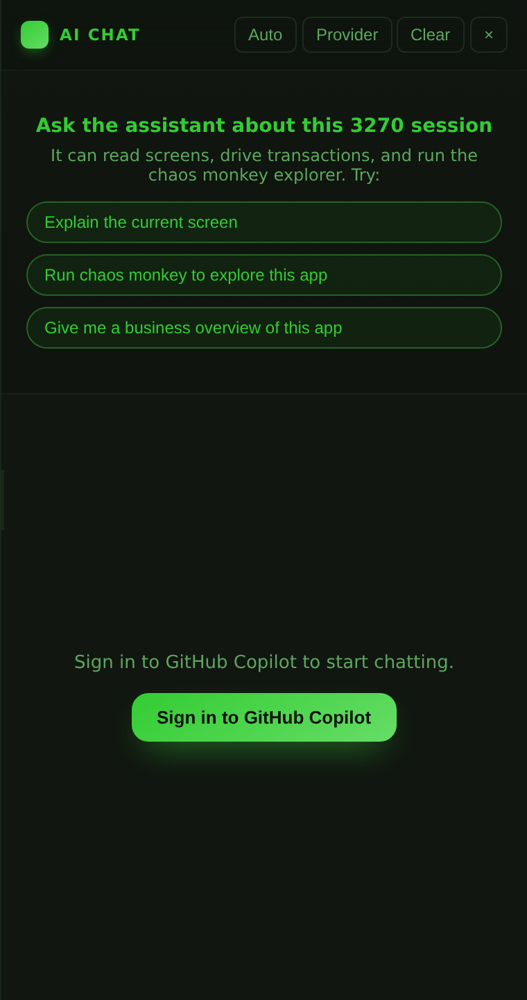

AI Chat Mode¶
AI Chat mode is a side panel that lets you drive a 3270 session through conversation. You type instructions in plain language; the AI reads the current screen, fills fields, presses keys, and runs chaos exploration — all with your approval before each action.
Driving 3270Web from outside the browser
The same tools are available to any MCP client — Claude Desktop, VS Code, Claude Code — through the MCP Server. Everything on this page about what the assistant can do applies there too; only the front end differs.
You choose which AI answers. GitHub Copilot, Claude, OpenAI, Google AI, Ollama (local or cloud) and any OpenAI-compatible endpoint are all supported, and everything on this page works the same way whichever one you pick. See AI Providers to set one up.
Open the Panel¶
- Connect to a host.
- Click the Open AI chat button in the menu bar (the chat bubble icon), or press Ctrl+K and run Toggle AI chat.
- The side panel slides open on the right.

Drag the panel's left edge to resize it, or focus the edge and use Left / Right (hold Shift for larger steps). The width is remembered between sessions.
Connect a Provider¶
The panel starts on GitHub Copilot. Before the first message you need either a Copilot sign-in or an API key for a different provider — the panel prompts for whichever the selected provider needs.
- Click Provider in the panel header (or press Ctrl+K and run AI provider settings). While the panel is waiting for a Copilot sign-in, Use an API key or local model beside Sign in to GitHub Copilot opens the same dialog.
- Pick a provider, fill in whatever it asks for, and click Save.
- The panel header shows the provider you are talking to, and the model dropdown reloads with that provider's models.
To disconnect, open More in the panel header and choose Sign out of GitHub Copilot (for another provider the entry reads, for example, Forget the saved Claude API key). For Copilot that clears the OAuth token; for every other provider it forgets the stored API key. You are asked first, and the conversation stays in the browser unless you choose to clear it too.
Full per-provider setup — including GitHub Enterprise, local Ollama and corporate gateways — is in AI Providers.
Send a Message¶
Type any instruction in the input box and press Send (or Enter).
Examples:
- "Read the current screen and tell me what options are available."
- "Navigate to the account inquiry menu and look up account 12345."
- "Run a chaos exploration and give me a summary when it finishes."
The AI reads the current screen before acting, then proposes one tool call at a time.
Explain This Screen¶
Sooner or later a screen arrives that nobody recognises — an unfamiliar transaction, a panel four steps into a flow somebody else recorded, an error code with no legend on it. Asking about that screen should not require typing a sentence describing it.
Explain this screen does it in one click, from three places:
- Terminal → Explain this screen in the menu bar.
- The bulb button beside the chat input, whenever the panel is open.
- Ctrl+K, then Explain this screen.
The panel opens if it was closed, and the question is asked for you.
The screen is captured at the moment you ask and travels with the question. This matters more than it sounds. The screen worth explaining is rarely the first one, and the host is free to redraw at any time — an inactivity timeout, a broadcast message, the next panel of a conversational transaction. An assistant told only "explain this screen" reads the display a round later and explains whatever is there by then, which is worse than no answer: it is a confident answer about a screen you were not asking about. Pinning the screen to the question removes that gap.
Because the screen is part of the message rather than a passing note, follow-up questions still work — "what is the field on line 12 for?" is answered against the screen you asked about, not the one now on the display.
Two details worth knowing:
- The transcript shows your question, not the eighty columns of screen attached to it. The screen is there for the model; the panel stays readable.
- Hidden fields are masked before the screen leaves 3270Web, so a password typed into a sign-on panel is never sent to the AI provider and never written to the stored conversation. This is the same redaction the REST API applies.
As with anything read from a host, the captured screen reaches the model
wrapped in <untrusted-host-data> tags: a screen is text somebody else
controls, and text that reads like an instruction is still data. See
What the model sees.
Tool Approval¶
Anything that changes the session needs your approval:
- The panel shows a Run button before a tool call that types, presses a key or otherwise changes something. Tool calls that only read run by themselves.
- Click Run to approve it, or Skip to decline it.
- This prevents unintended writes or key presses.
Every tool call is a card carrying its name, arguments, result, and a status badge. The badge and the card's left edge are colour-coded so you can scan a long exchange quickly:
| Status | Meaning |
|---|---|
| Pending approval (amber) | Waiting for you to click Run |
| Running (blue) | Executing against the session |
| Done (green) | Completed successfully |
| Failed (red) | The call returned an error |
| Skipped (grey) | You declined it |
Auto-run¶
To let the AI proceed without pausing, turn on Auto-run (the button in the panel header; earlier versions called it Auto Mode). While it is on, the button reads Auto-run: on, a banner across the panel says so, and typing and key presses run without waiting for you to click Run each time. It applies to one host and one account: turning it on while you explore a sample application does not turn it on for another host.
The first time you turn it on in a browser, 3270Web asks you to confirm, with focus on Cancel. The dialog lists what will then run without asking and what still asks; Esc or Cancel leaves Auto-run off. The answer is remembered in that browser, so turning it off and on again does not ask a second time. Turning it off never asks.
What still asks in Auto-run¶
Auto-run does not mean everything runs unattended. Every tool has a class, reported by the server alongside the tool definitions, and the class decides how much a call can change:
| Class | Means | Examples |
|---|---|---|
read |
Observes. Nothing on the host or in the session is different afterwards | get_screen, chaos_status, chaos_get_screen, list_skills, snapshot_diff |
write |
Changes something a person watching can see: a field, the cursor, the screen the host shows next, a note or a hint | write_field, send_key with an ordinary key, submit_screen, chaos_annotate_screen |
destructive |
Ends or replaces the session, discards something held, or starts automation nobody watches step by step | connect_session, chaos_start, chaos_resume, run_task, snapshot_delete, printer_stop — and send_key when the key is PF3 or Clear |
Two keys are always put in front of a person: PF3, which commonly logs
the session off, and Clear, which discards what is on the screen. That
holds in Auto-run, and it holds in every spelling the terminal accepts —
PF3, pf(3), F3, f03.
The server enforces it, not only the panel. POST /screen/key — and
POST /screen/submit when it names a key — refuses one of those keys with
409 and "requiresApproval": true unless the request carries
"confirmed": true, which the panel sends only after you click Run. The
model cannot set that flag; it is not part of the tool it is given. So a
script holding your session cookie, or a model that finds an unusual way to
spell a key, gets a refusal rather than a logged-off session.
An MCP client has no panel to click in. There send_key takes a
confirmed argument and refuses either key without it, and your client's own
approval prompt shows the argument before the call runs.
ask_user always waits for you, in any mode.
Choose a Model¶
Above the input box is a model selector listing the models your selected provider offers. 3270Web asks the provider for its live catalogue and falls back to a built-in list when it cannot (no key entered yet, or an endpoint that has no model list). Switch at any time and the next message uses the new model.
Each provider remembers its own model, so moving between providers does not reset your choice — and a model name the dropdown does not list can be typed into the Model box in the provider dialog.
Pick a heavier model for screen-reasoning-heavy sessions and a lighter one for quick reads or repetitive automation.
Available Actions¶
The AI can perform the following actions on your 3270 session:
| Action | Description |
|---|---|
| Read screen | Returns the current screen as text with a full field map (row, col, length, value, protection flags), a label for each input field, the keyboard state, and the screen's hash |
| Send key | Presses one key and returns the screen that results. AID keys — Enter, PF1–PF24, PA1–PA3, Clear — send the screen to the host and wait for it to answer. Tab, BackTab, Home, the arrow keys, EraseEOF, EraseInput and Reset act on the terminal only |
| Write field | Types text into one unprotected field, replacing what was there |
| Submit screen | Presses Enter, waits for the host, and returns the screen that results |
| Wait for unlock | Waits for a host that is still processing. Needed only when a result says the keyboard is still locked |
What the driving tools guarantee¶
The assistant works by row and column, without sight of the screen, so the tools check what a person would see for themselves.
Write field looks before it types:
- The position must be inside an unprotected field. A write aimed at a label is refused with a message saying what is there, rather than locking the keyboard.
- Text longer than the room left in the field is refused whole, not typed until it spills.
- The field is erased from the position to its end first, so
LEEwritten overSMITHleavesLEE, notLEETH. Passerase: falseto overtype. - An empty string clears the field.
- The answer reports the field as it now stands. A hidden field's value comes back masked.
- If the terminal still rejects a keystroke — a letter in a numeric field — the keyboard is reset, so the next action is not refused for a reason unrelated to it.
Rows and columns are 0-indexed, as get_screen reports them. The terminal's
own status bar counts from 1, and so does a field key such as R5C10L8; the
server converts a field key, and the assistant is told not to convert
anything itself.
Send key and Submit screen wait for the host and return the new screen, so the assistant sees the outcome of every action — whether the screen changed, any message the host put up, and the keyboard state — without a separate read. The keyboard is one of:
| State | Meaning |
|---|---|
unlocked |
Input is accepted |
locked |
The host is still processing. wait_for_unlock waits it out |
error |
The terminal rejected a keystroke and refuses everything until Reset is sent |
Recording. Start a recording and what the assistant does is recorded exactly as if you had done it: each write as a fill step, each key as a key step. A recording of an assisted session replays the whole of it.
Beyond the Screen¶
The panel drives more of this build than the keyboard does. Each of the following was on the REST API before it was a tool, which meant an assistant asked whether 3270Web could do it had no way to find out that it could — and answered from what it could see, which was a keyboard and an exploration engine.
| Ask for | Tool used | What it does |
|---|---|---|
| Run a saved task | list_tasks / run_task |
Lists the Guided Business Tasks saved here — each with the values it needs and the answer it returns — and runs one by name. Preferred over driving the screens by hand: a task verifies it is on the screen it expects before typing |
| Check a screen against a known-good one | snapshot_take / snapshot_diff |
Freezes the screen under a name, then reports which rows moved — against another snapshot or against the screen as it stands. The answer is the rows that differ, not a pass or a fail |
| Manage what is held | snapshot_list / snapshot_delete |
Names and sizes of the snapshots this session holds, and how to make room |
| Describe the connection | get_connection_details |
What was negotiated: TN3270E, the bound LU, the terminal type, TLS, byte counts. None of it is on the screen, and all of it matters when a session renders but misbehaves |
| Change what the terminal shows | get_display_toggles / set_display_toggle |
Reads and writes the terminal's own display settings — monocase, crosshair, cursor blink, the underscore under input fields |
| Collect printed output | printer_status / printer_start / printer_stop / printer_read_job |
Reports the 3287 printer session bound beside this one and every job it has collected, binds or ends one, and reads what the host printed. Batch output goes to a printer LU, never to the screen |
Snapshots live in memory for the life of the session and are never written to disk. A long print job is cut short before it reaches the conversation; the reply says so, and the whole file stays downloadable from the printer panel.
Chaos Integration¶
The AI can run and monitor chaos exploration directly from the chat panel. This gives you the same capability as the Automation menu, but driven by conversation.
| Chat command | Tool used | What it does |
|---|---|---|
| Start exploration | chaos_start |
Begins automated exploration with configurable step/time limits |
| Stop / Resume | chaos_stop / chaos_resume |
Stops a running run or resumes a loaded one |
| Check progress | chaos_status |
Returns current steps, transitions, unique screens, and coverage stats including the exploration frontier |
| Discovery report | chaos_report |
Markdown report with a Mermaid flow map, per-screen working and untried keys, field discovery, and analyst hints |
| Next experiments | chaos_insights |
Ranked guidance after a run stops: productive vs dead vs untried keys per screen, unproductive fields, and suggested experiments |
| Save hints | chaos_save_screen_hint / chaos_update_hints |
Adds known transaction codes, data values, or key assignments to guide exploration |
| Export workflow | chaos_export_workflow |
Downloads learned paths as 3270Connect-compatible JSON |
How a run is set up — which keys to block first, what to check when it
stops — is a skill the assistant loads when you ask for an
exploration, not something fixed in the prompt. Whatever the skill says, two
things hold: exploration types into a live host unattended, so the assistant
is told to propose a run and agree the keys that must never be pressed before
starting one; and chaos_start is a destructive-class tool, so it is put in
front of you.
The Automation menu and the AI panel share the same run state — you can freely mix both. See Chaos Mode for full details on the menu controls, settings, and the discovery report format, and see Running Chaos via AI Chat for a side-by-side comparison.
Business Understanding¶
Chaos exploration discovers what works — screens, key presses, and input values. The business-understanding tools let the AI add what it means: after a run (or whenever you ask it to "understand the app" or "map the business functions"), the AI reviews each discovered screen, infers its business purpose and the meaning of each input field, and records the result in the chaos mind map.
| Chat command | Tool used | What it does |
|---|---|---|
| Review discovered screens | chaos_list_screens |
Lists every screen with previews, fields, learned values, key destinations, and existing annotations |
| Look at one screen | chaos_get_screen |
Everything known about a single screen, by hash: purpose and notes, each field with its meaning and the values found to work, where each key leads, the keys that did nothing, and a preview |
| Annotate a screen | chaos_annotate_screen |
Records a business purpose (e.g. "Customer account inquiry") and per-field semantics (e.g. R5C20L8 → account_number) |
| Catalog a business function | business_save_function |
Saves a named multi-screen operation (steps + parameters), e.g. "Account inquiry" |
| List the catalog | business_list_functions |
Returns all cataloged business functions with their parameters |
| Generate a workflow | business_generate_workflow |
Turns a cataloged function plus parameter values into a downloadable, business-focused workflow JSON |
Recognising the screen you are on¶
Every screen the assistant is shown carries a screenHash — the identifier
exploration files that screen under. When the screen is one exploration has
already seen, the result also carries knownScreen: its label, its business
purpose, what its fields mean, and which keys led somewhere from it. So what
was learned is applied to the screen in front of you rather than only listed:
the assistant knows that PF8 pages forward here because exploration saw it
do so, not because that is what PF8 usually does.
What is typed into the input fields does not change a screen's hash, and a screen that differs only in a counter or a date is matched to the area exploration folded it into.
Annotations and the function catalog are stored inside the chaos run's mind map, so they persist with saved runs and travel through mind-map export/import. Knowledge is per run: load the annotated run (or import its mind map) in a new session to reuse it.
Performing business functions by prompt¶
Once functions are cataloged you can drive them in plain language:
- "Look up account 1234" — the AI matches the request against the catalog and drives the live session step by step, verifying each screen before writing.
- "Create a workflow that looks up an account" — the AI collects any missing required parameters (via clickable questions), calls
business_generate_workflow, and offers the resulting JSON for download. The file loads and replays through the standard workflow controls.
Generated business workflows carry Name, Description, BusinessFunction, and Parameters metadata so they are self-describing; see Workflow for the format.
What the Model Is Sent¶
Each turn, the provider you chose receives the system prompt, the tool definitions, the conversation so far, and a session context: where the session stands and the screen as it was when the turn began. The context means the assistant does not spend a round reading the screen before it can answer.
The context has two parts, and they are kept apart. What 3270Web itself
writes — whether a host is connected, how many screens have been discovered,
the current screen's hash — may sit beside the system prompt. What came from
the host — the screen text, field values, a discovered screen's label and
purpose — is delivered as data, wrapped in <untrusted-host-data> tags, in
the conversation rather than in the system prompt. A host can put any words
it likes on a screen, and words in a system prompt read as instructions.
Hidden fields are masked before anything leaves the server. That covers
the screen text and field values in every tool result and in the session
context, the echo of a write into a hidden field, and what exploration
learned: a hidden field's working values and examples are left out of
chaos_get_screen and of every screen result. The assistant is told never to
ask for a password in the chat, and to ask you to type one into the terminal
yourself — anything said in the chat is sent to the provider.
What is typed into a hidden field is also kept out of the server's verbose log.
An administrator can turn the AI chat off for the whole instance, limit which providers may be used, and limit where a custom endpoint may point. See Administrator controls.
Known Limitations¶
- Chat requests are rate-limited per account on the server: 60 a minute by default (
RATE_LIMIT_AI), with a separate limit on provider sign-in and settings (RATE_LIMIT_AICONTROL); see Limits. A single message is also stopped after 150 tool-call rounds. Your provider's own quotas apply on top. - When the provider rate-limits a message, the panel says how long it asked you to wait — "Try again in about 20 seconds." — using the
Retry-Afterheader 3270Web repeats from the provider (rounded up to whole minutes past a minute and a half, and never more than five minutes). A provider that sends no wait gets the plain "Wait a moment and try again". 3270Web's own limit above is reported separately, naming the setting that governs it. - Tool calling is required. Every provider listed in AI Providers supports it, but a small local model served through an OpenAI-compatible endpoint may not, or may do it badly — if the assistant answers in prose instead of reading the screen, that is usually the cause.
- Reasoning/thinking output is not displayed. Models that think before answering still do so, but only the final answer reaches the panel.
- If the model stream fails mid-response — including a provider that closes the connection before finishing — that exchange is not added to the history and no tool call from the partial response is run. Re-send the prompt.
- Conversation history is persisted in browser localStorage and capped at the most recent 200 messages.
- Business annotations key on screen hashes, which are specific to the run's mind map. Re-running discovery against a changed application may produce new hashes; re-annotate or re-import the mind map in that case.
Clear the Conversation¶
Open More in the panel header and choose Clear chat… to remove all messages from the current chat session. A confirmation dialog appears before the history is deleted, with focus on Cancel, so a stray Enter keeps the conversation.
Clearing starts a new conversation, not only an empty transcript: skills the previous conversation had loaded are sent again when the new one asks for them. See Skills and Extensions.
Keyboard Shortcut¶
Press Ctrl+K (Cmd+K on macOS) and run Toggle AI chat to show or hide the panel without reaching for the menu bar; AI provider settings in the same palette opens the provider dialog, and Explain this screen asks about the panel in front of you without opening the chat first. All other 3270 key bindings remain active while the panel is open; see Keyboard and Controls.